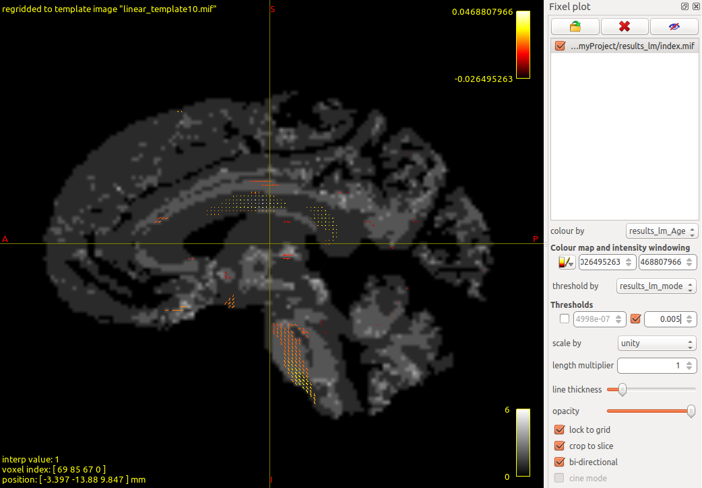

End-to-End Walkthrough
walkthrough.RmdThis walkthrough takes you from raw fixel data to statistical results in three steps. We use demo fixel-wise FDC data from 100 subjects (ages 8–22) from the Philadelphia Neurodevelopmental Cohort.
For deeper background on the concepts here, see the Introductions vignettes. For more
modelling options (GAMs, custom functions), see
vignette("modelling").
Step 1. Prepare data and convert to HDF5
Download the demo data
$ mkdir ~/Desktop/myProject && cd ~/Desktop/myProject
$ wget -cO - https://osf.io/tce9d/download > download.tar.gz
$ tar -xzf download.tar.gz && rm download.tar.gzThis gives you a folder of fixel .mif files and a cohort
CSV:
~/Desktop/myProject/
├── cohort_FDC_n100.csv
└── FDC/
├── index.mif
├── directions.mif
├── sub-010b693.mif
├── sub-0133f31.mif
└── ...The cohort CSV
The CSV file contains one row per subject with columns for covariates and two required columns:
-
scalar_name: the metric name (e.g.,FDC) -
source_file: path to that subject’s data file, relative to--relative-root
| subject_id | Age | sex | dti64MeanRelRMS | scalar_name | source_file |
|---|---|---|---|---|---|
| sub-6fee490 | 8.83 | 2 | 0.863669 | FDC | FDC/sub-6fee490.mif |
| sub-647f86c | 8.50 | 2 | 1.775610 | FDC | FDC/sub-647f86c.mif |
| … | … | … | … | … | … |
Convert to HDF5
Use the confixel command from ModelArrayIO to
convert the .mif files into an HDF5 file (see
vignette("hdf5-format") for what this file contains):
$ conda activate modelarray
$ confixel \
--index-file FDC/index.mif \
--directions-file FDC/directions.mif \
--cohort-file cohort_FDC_n100.csv \
--relative-root /home/<username>/Desktop/myProject \
--output-hdf5 demo_FDC_n100.h5For voxel-wise data, use convoxel instead. For CIFTI
surface data, use concifti. See the ModelArrayIO docs
for details.
Step 2. Fit a linear model with ModelArray
All commands in this step are run in R (or RStudio).
Load the data
library(ModelArray)
h5_path <- "~/Desktop/myProject/demo_FDC_n100.h5"
csv_path <- "~/Desktop/myProject/cohort_FDC_n100.csv"
modelarray <- ModelArray(h5_path, scalar_types = c("FDC"))
modelarrayModelArray located at ~/Desktop/myProject/demo_FDC_n100.h5
Source files: 100
Scalars: FDC
Analyses:
phenotypes <- read.csv(csv_path)Test on a subset
Always test on a small subset of elements first to verify the model runs correctly:
formula.lm <- FDC ~ Age + sex + dti64MeanRelRMS
result_test <- ModelArray.lm(formula.lm, modelarray, phenotypes, "FDC",
element.subset = 1:100
)
head(result_test)The output is a data frame with one row per element and columns for each statistic:
-
Term-level:
<term>.estimate,<term>.statistic,<term>.p.value,<term>.p.value.fdr -
Model-level:
model.adj.r.squared,model.p.value,model.p.value.fdr
Full run with parallel processing
Once the test looks right, run on all elements. Use
n_cores to speed things up:
result_full <- ModelArray.lm(formula.lm, modelarray, phenotypes, "FDC",
n_cores = 4
)On a Linux machine with a 10th-gen Xeon at 2.8 GHz using 4 cores, this takes about 2.5 hours for 602,229 fixels.
Save results to HDF5
writeResults(h5_path, df.output = result_full, analysis_name = "results_lm")You can verify the results were saved:
modelarray_new <- ModelArray(h5_path,
scalar_types = "FDC",
analysis_names = "results_lm"
)
modelarray_newModelArray located at ~/Desktop/myProject/demo_FDC_n100.h5
Source files: 100
Scalars: FDC
Analyses: results_lmStep 3. Convert results back and visualize
Convert to fixel .mif format
Use the fixelstats_write command from
ModelArrayIO to convert the results back to
.mif files for visualization:
$ conda activate modelarray
$ fixelstats_write \
--index-file FDC/index.mif \
--directions-file FDC/directions.mif \
--cohort-file cohort_FDC_n100.csv \
--relative-root /home/<username>/Desktop/myProject \
--analysis-name results_lm \
--input-hdf5 demo_FDC_n100.h5 \
--output-dir results_lmFor voxel data, use voxelstats_write. For CIFTI, use
ciftistats_write.
View in MRView
Open the results in MRtrix’s viewer:
$ cd results_lm
$ mrview- File > Open > select
index.mif - Tools > Fixel plot > Open fixel image > select
index.mifagain - Set “colour by” to
results_lm_Age.estimate.mif - Set “threshold by” to
results_lm_model.p.value.fdr.mif, enable upper limit, enter0.005

Next steps
-
More model types: fit GAMs with nonlinear smooth
terms, or run arbitrary custom functions with
ModelArray.wrap()— seevignette("modelling") -
Explore your data: use ModelArray’s accessor
functions to inspect scalars, results, and per-element data frames — see
vignette("exploring-h5") -
Scale up: split large analyses across HPC jobs —
see
vignette("element-splitting") -
Understand the file format: learn about chunking,
compression, and memory efficiency — see
vignette("hdf5-large-analyses")